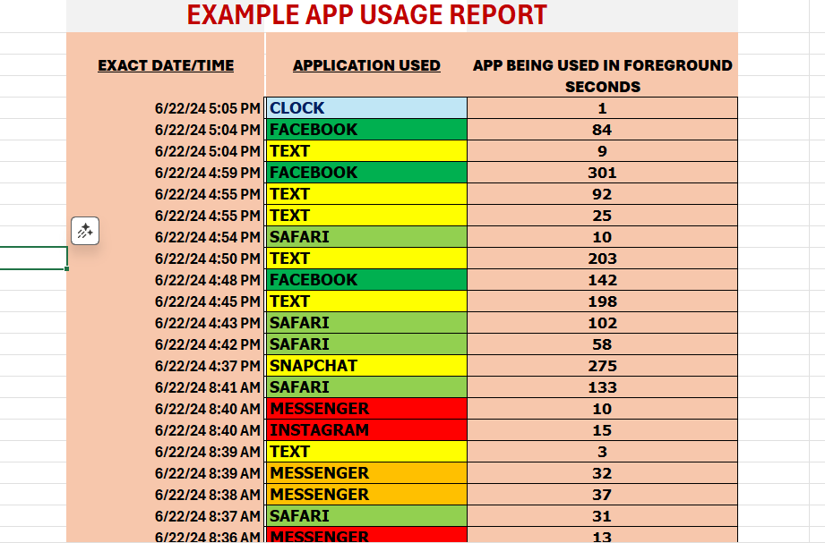

iPhone Activity Triage Service
I provide fast, private, non-invasive iPhone activity reporting so parents can confirm what's happening on a child’s device — without spying, hacking, or accessing content.
📌 Deleted Text Activity Report
- Identifies **when texts or iMessages were deleted**
- Shows **how many messages** were deleted in each cluster
- Shows the **exact timestamps** of deletion activity
- Detects full “Deleted Chat Threads” and provides the associated phone number
- Delivered as a clean, parent-friendly Excel or PDF report
📊 App Usage & Activity Audit
- Shows every app used and the **exact date/time** it was opened
- Displays how long each app stayed active in foreground
- Provides patterns: late-night usage, high-risk apps, suspicious time gaps
- Includes an optional safety summary section for parents
Sample Report:

What I Do NOT Do
- ❌ I do NOT spy, hack, live-monitor, or install anything
- ❌ I do NOT access your child’s iCloud or Apple account
- ❌ I do NOT view or accept photos, videos, recordings, or private content
- ❌ I do NOT read message content — only behavior metadata
- ❌ I do NOT access any device directly
This is a **non-invasive, metadata-only, parent-authorized triage service** designed to help good parents keep good kids safe.